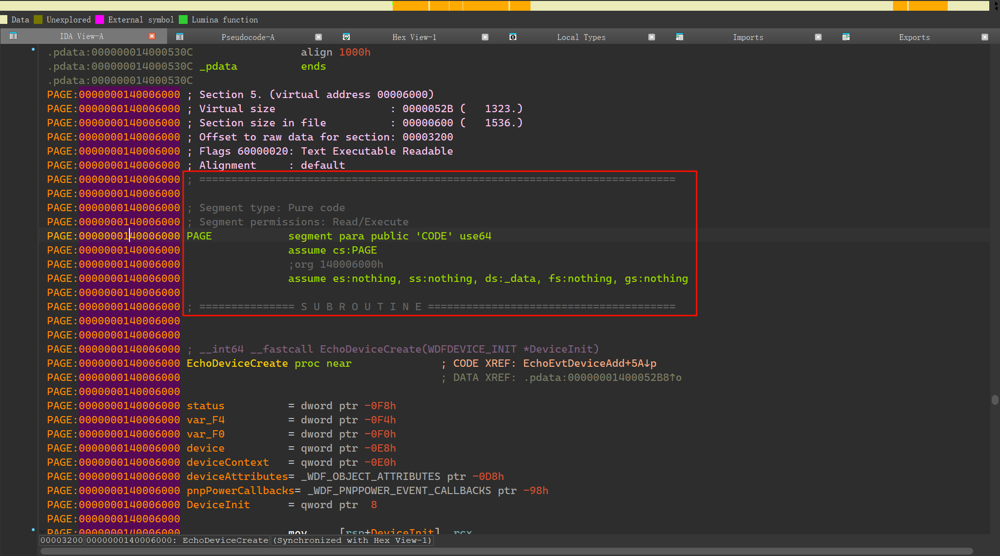
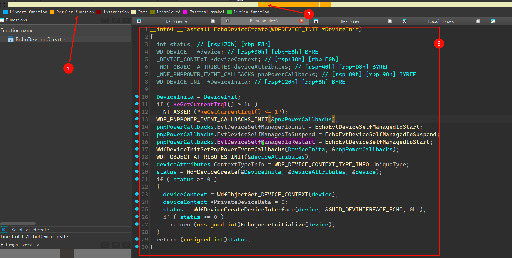

概述 驱动开发 过程中，相关 API 的学习整理
[toc]
链表
定义链表结构体
typedef struct
{
DWORD Pid;
UCHAR ProcessName[2048];
DWORD Handle;
LIST_ENTRY ListEntry;
} ProcessList;初始化 InitializeListHead
LIST_ENTRY linkListHead;
// 初始化链表头部
InitializeListHead(&linkListHead);插入链表 InsertTailList
pData = (ProcessList*)ExAllocatePool(PagedPool, sizeof(ProcessList));
InsertTailList(&linkListHead, &pData->ListEntry);判断是否为空 IsListEmpty
if(!IsListEmpty(&linkListHead))
{
DbgPrint("Empty");
}移除链表 RemoveHeadList
LIST_ENTRY* pEntry = RemoveHeadList(&linkListHead);获取链表当中的结构
pData = CONTAINING_RECORD(pEntry, ProcessList, ListEntry);
DbgPrint("Pid[%d], ProcessName[%s], Handle[0x%x] \n", pData->Pid, pData->ProcessName, pData->Handle);安装卸载相关
WdfDriverCreate
WdfDriverCreate 是 Windows Driver Frameworks (WDF) 中用于创建驱动程序的函数。它用于初始化驱动程序，并将其与 Windows 操作系统进行集成。
WdfDriverCreate 函数需要填写一个 WDFDRIVER 结构体来定义驱动程序的属性和行为。以下是一些常见的参数：
DriverName: 驱动程序的名称，用于在调试和日志记录中标识驱动程序。DriverVersion: 驱动程序的版本号，用于标识驱动程序的版本。DeviceAddVersion: 用于添加新设备的 WDF 函数版本。DriverUnload: 驱动程序卸载时的回调函数，用于清理资源并执行其他必要的操作。DispatchTable: 一个包含驱动程序处理 IRP 请求的回调函数的表。RegistryPath: 驱动程序在注册表中的路径，用于存储配置信息和设置。
WdfDeviceCreate
WdfDeviceCreate 是 Windows Driver Frameworks (WDF) 中的一个函数，用于创建设备对象并初始化与设备相关的数据结构。它是 WDF 中非常重要和常用的函数之一。
WdfDeviceCreate 函数需要填写一个 WDFDEVICE_INIT 结构体来定义设备的属性和行为。以下是一些常见的参数：
-
Driver: 指向驱动程序的指针，用于关联设备和驱动程序。 -
DeviceAttributes: 指向调用方分配的WDF_OBJECT_ATTRIBUTES结构的指针，该结构包含新设备的属性。 -
StackSize: 设备的堆栈大小，用于定义设备对象的执行环境。 -
DeviceInit: 指向WDFDEVICE_INIT结构的指针的地址，用于初始化设备的状态和行为。
在调用 WdfDeviceCreate 之后，WDF 将使用提供的参数来创建并初始化一个设备对象。然后，设备可以使用 WDF 提供的其他函数来管理设备的状态、处理请求以及与其他设备或驱动程序进行交互。
需要注意的是，WdfDeviceCreate 是一个高级别的函数，通常用于创建完整的设备对象。对于较简单的设备或需要更精细控制的情况，可能需要使用其他 WDF 函数来手动创建和配置设备对象。同时，在使用 WdfDeviceCreate 和其他 WDF 函数时，应注意遵循正确的使用方法和规范，以避免产生潜在的问题和风险。
实用函数
绕过签名检查
// 绕过签名检查
BOOLEAN BypassCheckSign(PDRIVER_OBJECT pDriverObject)
{
#ifdef _WIN64
typedef struct _KLDR_DATA_TABLE_ENTRY
{
LIST_ENTRY listEntry;
ULONG64 __Undefined1;
ULONG64 __Undefined2;
ULONG64 __Undefined3;
ULONG64 NonPagedDebugInfo;
ULONG64 DllBase;
ULONG64 EntryPoint;
ULONG SizeOfImage;
UNICODE_STRING path;
UNICODE_STRING name;
ULONG Flags;
USHORT LoadCount;
USHORT __Undefined5;
ULONG64 __Undefined6;
ULONG CheckSum;
ULONG __padding1;
ULONG TimeDateStamp;
ULONG __padding2;
} KLDR_DATA_TABLE_ENTRY, * PKLDR_DATA_TABLE_ENTRY;
#else
typedef struct _KLDR_DATA_TABLE_ENTRY
{
LIST_ENTRY listEntry;
ULONG unknown1;
ULONG unknown2;
ULONG unknown3;
ULONG unknown4;
ULONG unknown5;
ULONG unknown6;
ULONG unknown7;
UNICODE_STRING path;
UNICODE_STRING name;
ULONG Flags;
} KLDR_DATA_TABLE_ENTRY, * PKLDR_DATA_TABLE_ENTRY;
#endif
PKLDR_DATA_TABLE_ENTRY pLdrData = (PKLDR_DATA_TABLE_ENTRY)pDriverObject->DriverSection;
pLdrData->Flags = pLdrData->Flags | 0x20;
return TRUE;
}如何使用
// 驱动入口地址
NTSTATUS DriverEntry(IN PDRIVER_OBJECT Driver, PUNICODE_STRING RegistryPath)
{
if (BypassCheckSign(Driver))
DbgPrint("Bypass Sign Success.");
DbgPrint("Driver loaded. \n");
Driver->DriverUnload = UnDriver;
return STATUS_SUCCESS;
}内存相关
申请内存 ExAllocatePool
申请内存使用 ExAllocatePool 、ExAllocatePoolWithTag、ExAllocatePool2 接口
原型
PVOID ExAllocatePool(
IN POOL_TYPE PoolType,
IN SIZE_T NumberOfBytes
);- PoolType：指定内存池的类型，可以是
NonPagedPool（非分页内存池）或PagedPool（分页内存池）等。 - NumberOfBytes：指定要分配的内存大小，最好是 4 的倍数。
- 返回值：返回分配的内存地址，一定是内核模式地址。如果返回 NULL，则代表分配失败。
ExAllocatePool 与 ExAllocatePool2/ExAllocatePool3
从 Windows 10 版本 2004 开始，推荐使用 ExAllocatePool2 和 ExAllocatePool3 来替代 ExAllocatePool。新的 API 默认会将分配的内存初始化为零，有助于避免内存泄漏相关的 bug。
示例代码
PVOID Allocation = ExAllocatePool(PagedPool, 100);
if (Allocation == NULL) {
// 处理内存分配失败的情况
} else {
// 使用分配的内存
}在新的驱动中，应该使用 ExAllocatePool2 接口
PVOID Allocation = ExAllocatePool2(POOL_FLAG_PAGED, 100, 'abcd');
if (Allocation == NULL) {
// 处理内存分配失败的情况
} else {
// 使用分配的内存
}填充内存 RtlZeroMemory
// 分配内核堆空间
pData = (ProcessList*)ExAllocatePool(PagedPool, sizeof(ProcessList));
RtlZeroMemory(pData, sizeof(ProcessList));拷贝内存 RtlCopyMemory
// 设置变量
pData->Pid = (DWORD)PsGetProcessId(eproc);
RtlCopyMemory(pData->ProcessName, PsGetProcessImageFileName(eproc), strlen(PsGetProcessImageFileName(eproc)));
pData->Handle = (DWORD)PsGetProcessInheritedFromUniqueProcessId(eproc);释放内存 ExFreePool
ExFreePool(pData);进程相关
#include <windef.h>
// 函数返回给定进程的进程环境块（Process Environment Block，PEB）的指针
extern PVOID PsGetProcessPeb(_In_ PEPROCESS Process);
// 此函数通过给定的进程 ID 查找对应的进程，并将进程的 EPROCESS 结构指针存储在提供的指针变量中。
NTKERNELAPI NTSTATUS PsLookupProcessByProcessId(HANDLE ProcessId, PEPROCESS* Process);
// 此函数返回给定进程的 Wow64 进程环境的指针。Wow64 进程环境是用于在 64 位 Windows 上运行 32 位应用程序的兼容性层。
extern NTKERNELAPI PVOID PsGetProcessWow64Process(_In_ PEPROCESS Process);
// 此函数返回给定进程的映像文件名，即执行该进程的可执行文件的名称。
extern NTKERNELAPI UCHAR* PsGetProcessImageFileName(IN PEPROCESS Process);
// 此函数返回给定进程所继承的唯一进程 ID, 即父进程 ID。
extern NTKERNELAPI HANDLE PsGetProcessInheritedFromUniqueProcessId(IN PEPROCESS Process);宏
alloc_text
这段代码是 Windows内核驱动]开发（特别是使用 WDF — Windows Driver Framework，如 KMDF 或 UMDF）中常见的 内存分页控制指令，用于指定函数应被放置在可分页内存（PAGE 段）还是非分页内存（INIT 或默认代码段）中。
📌 代码解析
#ifdef ALLOC_PRAGMA
#pragma alloc_text (PAGE, EchoDeviceCreate)
#pragma alloc_text (PAGE, EchoEvtDeviceSelfManagedIoSuspend)
#endif1. #ifdef ALLOC_PRAGMA
- 这是一个 条件编译宏。
ALLOC_PRAGMA通常由驱动项目在需要显式控制函数内存属性时定义（例如在源文件开头或通过编译器选项）。- 如果未定义
ALLOC_PRAGMA，这些#pragma指令将被忽略，函数按编译器默认方式分配（通常是可分页的，但不保证）。
💡 为什么用条件编译？
有些构建环境（如静态分析、特定平台）可能不支持#pragma alloc_text，或开发者希望在调试/发布版本中灵活控制。通过宏开关，可以统一管理。
2. alloc_text
PAGE 段
#pragma alloc_text(PAGE, FunctionName):
- 这是 Microsoft 编译器（MSVC）特有的 pragma 指令。
- 作用：将指定函数的代码放入名为
PAGE的内存段中。 PAGE段 = 可分页内存（Paged Memory）：- 系统内存紧张时，该段代码可被换出到磁盘（pagefile.sys）。
- 只能在 IRQL <= APC_LEVEL（通常是 PASSIVE_LEVEL）时调用。
- 适用于 不会在高 IRQL（如 DISPATCH_LEVEL）或 DPC/ISR 中执行的函数。
编译后的可行文件逆向结果如下所示，可见 EchoDeviceCreate 函数是直接保存在普通函数区的，并且该函数所使用字符串]等都会被编译到当前页：


INIT 段
#pragma alloc_text(INIT, DriverEntry):
INIT段 = 可分页且可丢弃（Discardable）- 驱动加载完成后（即
DriverEntry执行完毕），操作系统会 自动释放整个INIT段，回收物理内存。 - 只能在 IRQL = PASSIVE_LEVEL 调用（
DriverEntry正是在此 IRQL 下执行）。 - 适用场景：仅在驱动加载阶段运行一次的初始化代码。
💡 为什么放这里？
DriverEntry是驱动入口点，只在驱动加载时调用一次。- 放入
INIT可减少驱动常驻内存占用，符合 Windows 驱动最佳实践。
⚠️ 错误示例：如果某个
INIT段函数在驱动加载后被再次调用，会导致 Page Fault / BugCheck（蓝屏）！
对比
| 内存段 | 是否可分页 | 安全调用 IRQL | 典型用途 |
|---|---|---|---|
PAGE | ✅ 是 | ≤ APC_LEVEL（通常 PASSIVE_LEVEL） | 设备创建、初始化、清理、IOCTL 处理等 |
| （默认 / 无标记） | ❌ 否（非分页） | ≤ DISPATCH_LEVEL | DPC、中断处理、CompletionRoutine 等 |
INIT | ✅ 是（且驱动加载后可释放） | ≤ APC_LEVEL | DriverEntry、AddDevice 等仅在加载时运行的函数 |
⚠️ 错误示例：若将 DPC 回调函数放在
PAGE段，在内存分页时触发 DPC 会导致 BugCheck（蓝屏），因为系统无法在高 IRQL 访问分页内存。
🛠 开发建议
- 始终确认函数调用上下文的 IRQL 使用 Static Driver Verifier (SDV) 或 Code Analysis 检查 IRQL 与内存段匹配性。
- 不要将
PAGE函数用于以下场景：- DPC / Timer callbacks
- Interrupt Service Routines (ISR)
- Completion routines（除非明确在 PASSIVE_LEVEL）
- Any code path called at IRQL ≥ DISPATCH_LEVEL
INIT函数必须满足：- 仅在驱动加载期间调用
- 不被任何非-
INIT函数引用（否则链接器可能报错或导致运行时崩溃）
- 现代 WDF 驱动中：
- 大多数事件回调（
EvtDeviceAdd,EvtIoRead,EvtDeviceD0Entry等）默认可安全放入PAGE。 - 只有涉及硬件中断、DPC、自旋锁保护的代码才需放在非分页段（默认段）。
- 大多数事件回调（